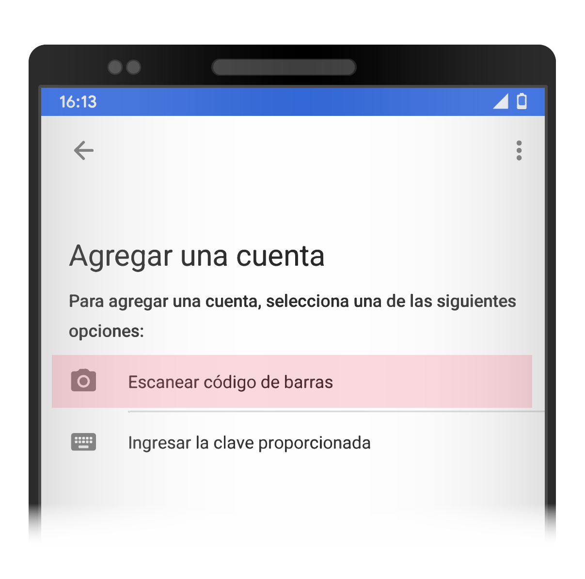

Código para configurar OTP en un dispositivo
¡Al cerrar esta ventana no podras volver a visualizar el codigo!
Escanea el código con un autenticador y quedará configurado automaticamente.
Si no tenés instalado un
autenticador, seguí éstos pasos.
Vamos a utilizar el Autenticador de Google
Necesitás un celular o tablet con lector QR*
Seleccioná el OS de tu dispositivo
*Usa tu lector de QR aquí para instalar la app
Sigue los pasos iniciales de la App
Avanza hasta el menú indicado y seleccioná la opción de escanear código de barras. Luego tendrás que otorgar permiso a la aplicación para poder acceder a la cámara.
